Last updated on 2020/10/20
Emi Yonetsu / 米津恵美
アーティスト, 1992年熊本生まれ (/経歴)
Contact: yonetsuemi@gmail.com
Works
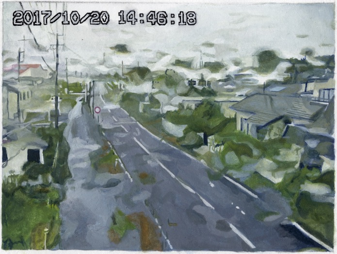
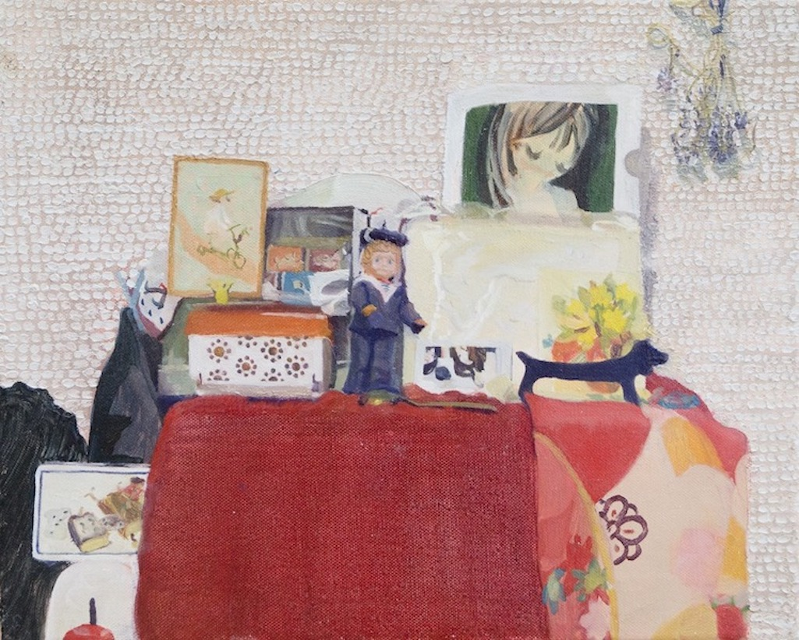
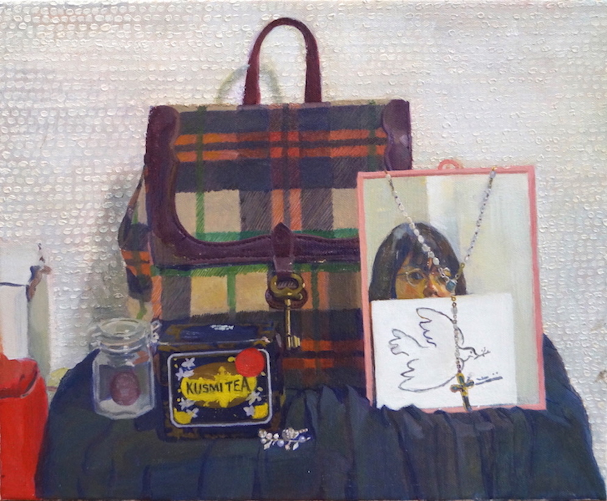
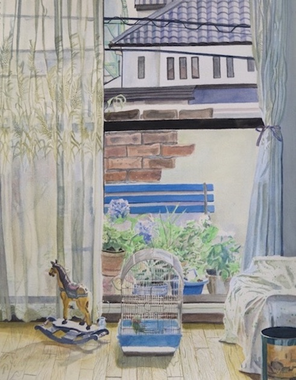
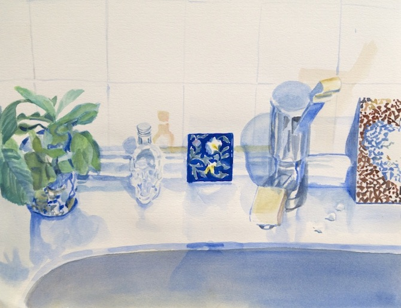
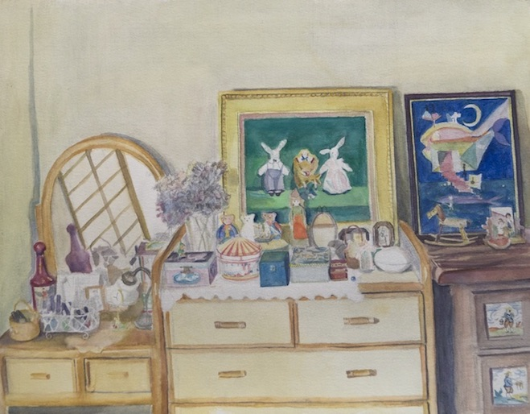
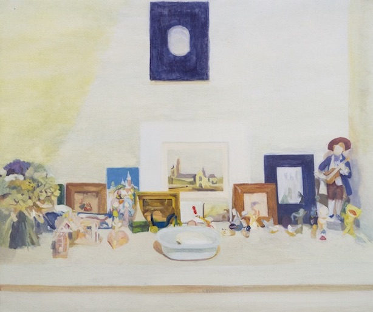
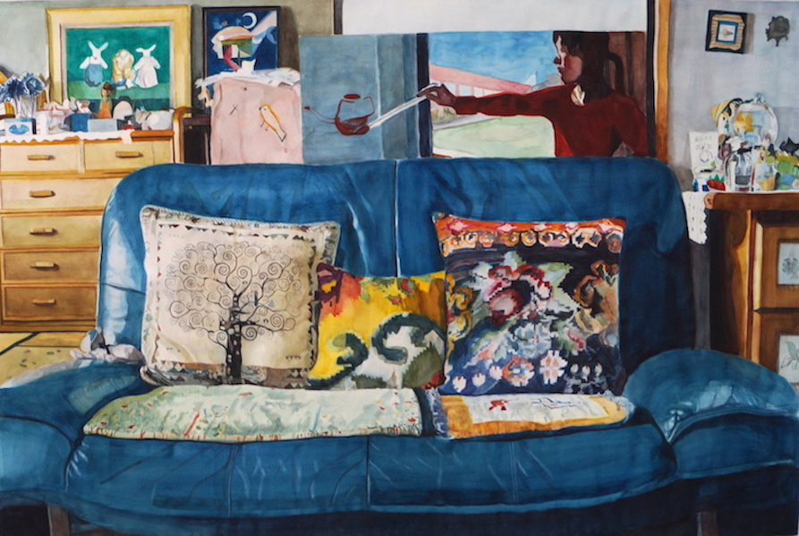
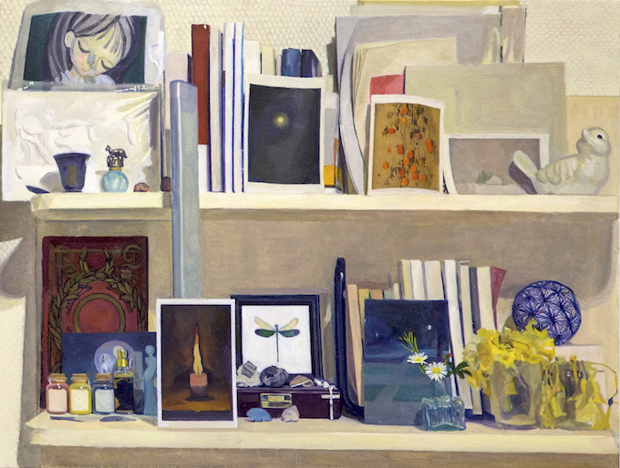


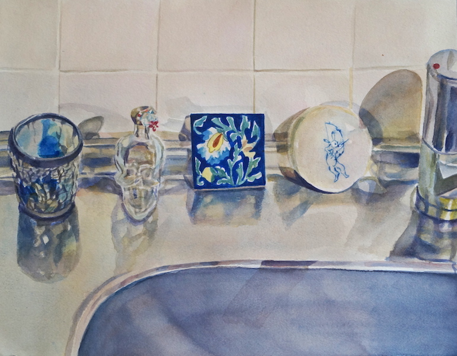
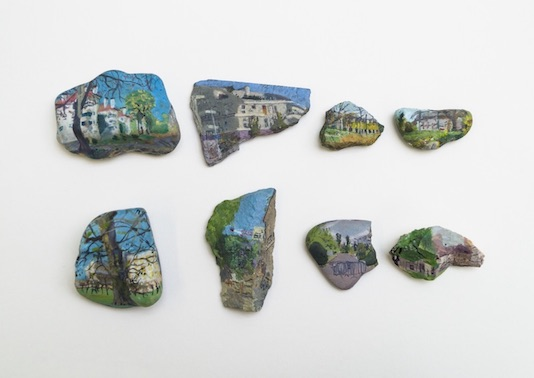
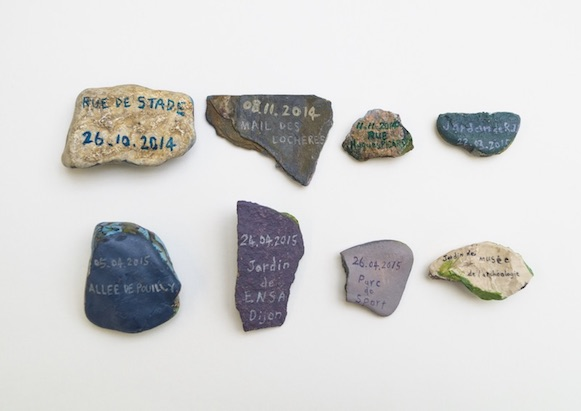
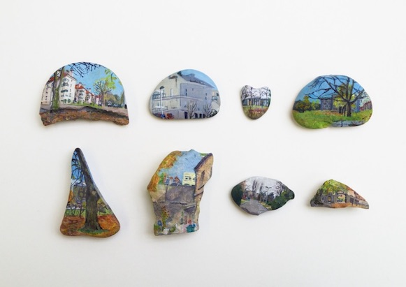
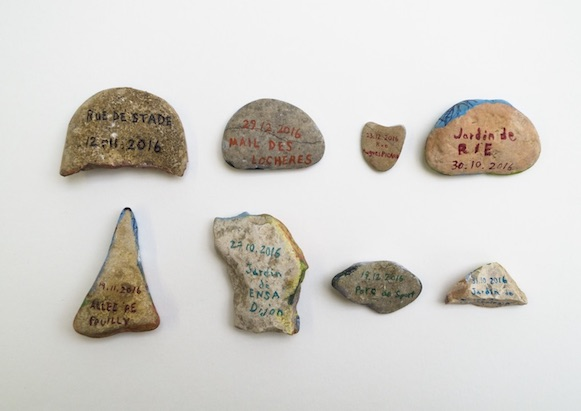
— Works
« Zone 14:46:18 » は福島の放射能汚染による帰還困難区域の風景を描いた水彩画のシリーズです。
帰還困難区域内には数多くのウェブカメラが設置してあり、2013年8月から誰でも24時間インターネット上でそのライヴ映像を見ることができるようになっていました。私は2017年の6月16日金曜日以降毎週金曜日と毎月11日の14時46分18秒にそのいずれかのウェブカメラの映像のスクリーンショットを一枚撮り、それをもとに水彩画を描くことを続けています。
2011年の3月11日金曜日14時46分18秒に地震は起こり、それに伴い福島第一原子力発電事故がありました。あの日から私たちが抱えた問題は未だ続いていること、またあの日突きつけられた私たちの日常の脆さを忘れてしまわないためにこのシリーズはあります。
2019年3月末日をもって行政による帰還困難区域内のウェブカメラからの映像配信は終了しました。そのため2019年4月以降は同じ形式のもと、日付と時間だけを描くことでこのシリーズを続けています。
未だ住人が自宅に帰れないなか映像配信が終わったのは時間の経過による忘却の表れであり、このシリーズ内での風景の喪失は社会の忘却の反映だと思います。社会の中では新たな問題が次々と起きますし、人々はそれぞれの生活に忙しいため個々の問題は解決しないまま被害者以外そのことを忘れてしまいます。私はこのような忘却とどのように向き合うかに関心があります。 その中で、非日常と日常の両方を常に意識することは私にとって重要なテーマです。
ありふれた風景などを撮る写真家のStephen Shoreは、インタビューの中で60年代にある事件をきっかけにアメリカで暴動が起きていた頃のことを語っています。その頃彼はロンドンにいて、新聞で読む限りアメリカという国は崩壊しているように感じられたと言います。しかしアメリカに戻ってみると悪いことが起きていても、何事もなかったように人々は生活していたそうです。新聞にはかかれない平凡な瞬間こそ生活というものを表現するために必要な要素だと彼は言っています。
このように日常とカタストロフは同時に存在しています。そして日常と非日常の境界は不可視であると私は思います。ライヴカメラから見た福島の立入禁止区域内の、見た目には放射能汚染の危険を感じられないありふれた風景も日常の延長線上にあるカタストロフを想起させる象徴的なものだとおもいます。 (Instagram)
« 日々の欠片 », この作品はより個人的なアーカイヴです。 これは1年間毎日1枚私の周りの空間の一部をガラスの破片に描いたシリーズです。描かれた場所のほとんどはディジョンの私の部屋であり、時々学校やホテルなどもあります。そして毎回その描いた断片を実際の空間に重ねて写真を撮りその写真をまとめ１冊の本にしました。
ミニアチュールは親密さ愛着と結びつきが深い手法だと思います。またガラスの断片はカタストロフを想起させます。
これは私個人の生活の場所を描いた作品ですが、例えば福島の原発事故で失われたのも数多くのこのような個人の生活です。 放射能汚染以外にも、毎年のように日本では洪水が起こっています。 水に浸かったものたちは汚染され廃棄せざるを得ません。それらは災害ごみと呼ばれますが、それは本来ゴミではなく人々の生活の断片です。そういった事柄に思いを重ねてこのシリーズを制作しました。 (Instagram)
« 部屋 »のシリーズは2016年から定期的に同じ生活の空間を描ているものです。« 日々の欠片 »はこの作品から派生、発展しました。
私の主な表現手法は絵です。なぜ絵を描くのでしょうか。
フランスの詩人ポールヴァレリーは「絵画は、物体を、かつて一度、それが愛情を込めてながめられたであろう状態において見ることをわれらに可能にしてくれる。」と言っています。
また、日本の北の海沿いの地域に失せ物絵馬という風習があるそうです。漁師が海でナイフなどの金物を失くした時、神社に失くし物の絵を描いて納める風習です。金物が嫌いな海の神の怒りを納めるためであり、また失くした物への執着を手放すためでもあるようです。
このような描くという行為が伴う儀式性は私が描く動機の一つだと思います。
« ヒビI »もまたカタストロフに関するものです。
2016年に私の出身地の熊本で大きな地震がありました。その地震によって家のあちこちにヒビができました。母はその天井にできたヒビの一つに蔦の絵を描きました。それはとてもポジティブな行動だと思い印象深かったので私は家の天井の壁紙と同じ質感の壁紙に母の絵を再現しました。
割れた食器を接着して接合面に金で装飾する金継ぎという修復技法がありますがその精神に近いと思います。
« 欠片 »も熊本地震に関連した作品です。地震のため実家のたくさんの食器が割れましたが、その破片を水彩で描くことによって壊れた食器に新しい命を与えたいと思いました。
« 石の記憶 »は私たちの存在の儚さを表した作品です。
制作のプロセスとしてはまず石を拾い、その場でその石に周囲に見える風景を描き、反対の面に日付と場所の名前を描きます。
人間や風景は移ろい易いものです。私はある瞬間の私と風景と石の出会いを石という恒久的な存在に保存しました。
作品の展示においては鏡を用いたことにより石の両面を同時に見ることができ、また鑑賞者がそれを覗き込むことによって自身や周囲の環境が映り込み、この作品と鑑賞者との出会いが生まれます。
« ROSE / LOSE »は新聞記事で作られた薔薇のコラージュ作品です。 世界には常に良い面と悪い面の両方があります。私たちはそのどちらかではなく両方を見ないといけないと思います。
そのためこの作品では良いことの象徴として一般的に愛の象徴であり追悼のためにも用いられる薔薇の形を選びました。
新聞は悪いことを我々に教えるものとして用いて、中でも苦境にあり平穏な日常を失った人々の声を伝える内容の記事を選んでいます。
1つの薔薇につき1つの記事が使われています。
タイトルの ROSE / LOSE は薔薇を意味する ROSE と英語で喪失を意味する LOSE です
献花（offrande de fleurs）のように地面に敷き詰められたコラージュの薔薇は縮小印刷、複製されており、人々はこれを自由に持って帰ることができます。Felix Gonzalez-Torresのインスタレーション作品のようにこの作品では展覧会の外でも鑑賞する機会を与えたいと思いました。